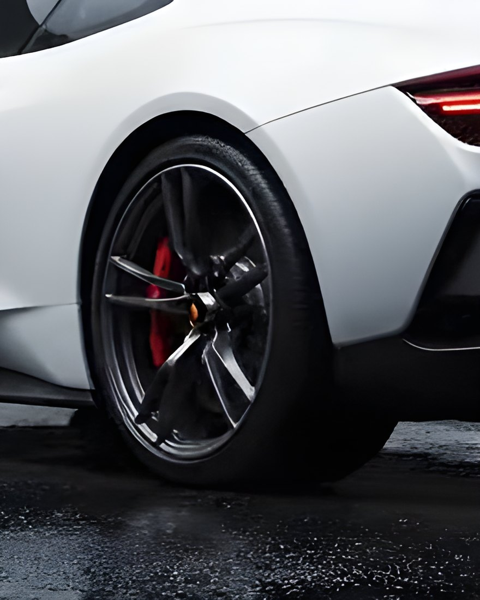
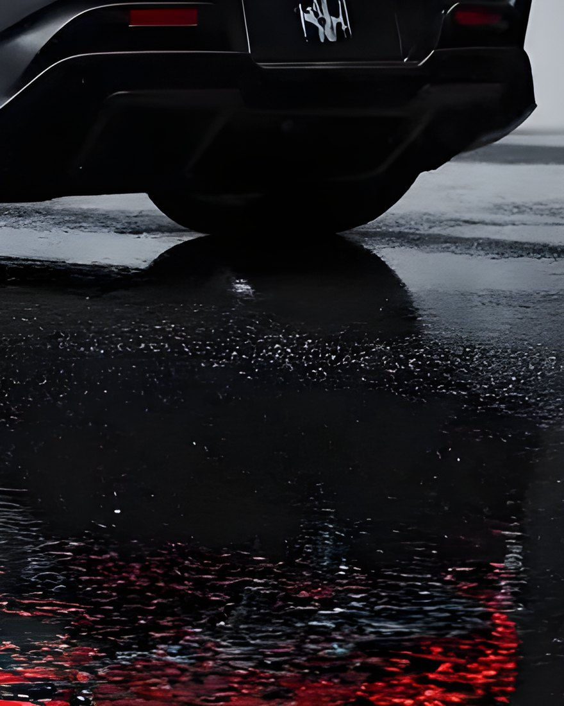

Vértice, aluguel de carros premium
Aluguel de carros premium
Role pra dar a volta
Chegue mais perto.
Arraste pro lado.
 Faróis
Faróis Perfil
Perfil
Roda Lanterna
Lanterna
ReflexoArraste pra girar
Vértice é um conceito. Quem fez foi a GuDev.